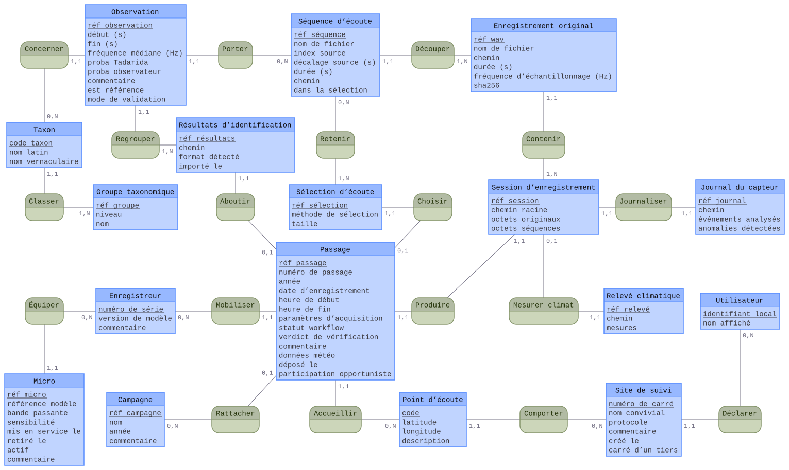

Modèle de données & domaine¶
Le domaine s'organise autour d'une nuit de capture. Cette page relie le modèle conceptuel
d'origine (le brief) à son implémentation (entités-record + tables SQLite).
La source conceptuelle : le brief
Le modèle conceptuel du brief définit les 15 entités (C1–C15), leurs cardinalités et les règles métier, avec un diagramme de classes. Les noms y sont ceux de l'IHM (langage utilisateur). Cette page-ci montre comment ces concepts deviennent des records Java et des tables SQL.
Le modèle conceptuel (MCD Merise)¶
Un utilisateur déclare des sites de suivi, chacun avec des points d'écoute. Sur un point, il réalise des passages (une nuit). Un passage est la racine d'agrégat : il possède une session d'enregistrement (les enregistrements originaux copiés de la carte SD, les séquences d'écoute ralenties ×10, le journal du capteur, le relevé climatique), une sélection d'écoute pour la vérification, et (après dépôt) des résultats d'identification Tadarida (les observations, classées par taxon).
C'est cet agrégat qui avance dans le workflow à états
Importé → … → Déposé, plus Récupéré pour les nuits rapatriées de Vigie-Chiro, qui n'entrent
pas dans cette file (#2581).
Au niveau conceptuel, on raisonne avec le MCD Merise (la notation enseignée en France) :
entités (identifiant souligné), associations porteuses d'un verbe, et cardinalités
(min,max) sur chaque patte. Les clés étrangères n'y figurent pas : elles sont portées par les
associations.

nuit-de-capture.mcd, rendu avec Mocodo (voir Régénérer le MCD).MCD conceptuel ≠ schéma physique
Ce MCD décrit le domaine, indépendamment du stockage. Sa traduction relationnelle (le
schéma physique ci-dessous) ajoute les clés primaires techniques, les clés étrangères, et
transforme l'association N:N Retenir (Sélection ↔ Séquence) en table de jonction
(selection_sequence).
Le schéma physique (SQLite)¶
Le schéma physique est plus proche de la machine. On le donne en notation pattes-de-corbeille
(IE / crow's foot, celle de Mermaid) : relations binaires, clés étrangères explicites. C'est la
traduction du MCD ci-dessus. 19 tables à l'origine, créées par
V01__schema.sql ;
le schéma courant en compte 34, au terme des
41 migrations versionnées ; clés étrangères
ON DELETE CASCADE (supprimer un passage emporte sa session, ses séquences, ses observations…).
Pourquoi ces deux chiffres sont balisés et pas le premier
Les 19 tables d'origine sont un fait d'histoire : V01__schema.sql ne changera plus, les
migrations étant en ajout seul. Les deux autres bougent à chaque migration, et ils avaient
dérivé - la page annonçait 31 tables « après V02→V35 » quand il y en avait 33 après V38.
Le garde les recalcule désormais : le compte de tables vient du schéma appliqué, pas d'un
comptage de CREATE TABLE (une reconstruction de table en crée une de plus et la renomme).
erDiagram
user ||--o{ monitoring_site : "déclare"
monitoring_site ||--o{ listening_point : "contient"
monitoring_site ||--o| site_tiers : "carré d'un tiers"
listening_point ||--o{ passage : "accueille"
campagne ||--o{ passage : "regroupe"
passage ||--o| passage_opportuniste : "hors protocole"
recorder ||--o{ passage : "enregistre"
recorder ||--o{ microphone : "équipe"
passage ||--|| recording_session : "produit"
recording_session ||--o{ original_recording : "contient"
original_recording ||--o{ listening_sequence : "découpe"
recording_session ||--|| sensor_log : "journal"
recording_session ||--|| climate_log : "climat"
passage ||--|| listening_selection : "sélection"
listening_selection }o--o{ listening_sequence : "selection_sequence"
passage ||--|| identification_results : "résultats"
identification_results ||--o{ observation : "contient"
listening_sequence ||--o{ observation : "porte"
taxon ||--o| taxon_prioritaire : "à enjeu (PNA)"
taxon ||--o{ observation : "identifie"
taxonomic_group ||--o{ taxon : "regroupe"Correspondance concept → record → table¶
Le métier est modélisé en record immuables (cf.
Objets-valeurs) ; les DAO les lisent/écrivent dans les
tables. Les noms suivent trois registres : IHM/brief (français), record (français sans
accents), SQL (anglais).
| Brief | Record | Table |
|---|---|---|
| C1 · Utilisateur | Utilisateur |
user |
| C2 · Site de suivi | Site |
monitoring_site |
| C3 · Point d'écoute | PointDEcoute |
listening_point (+ table latérale point_commune, V38) |
| C4 · Enregistreur | Enregistreur |
recorder |
| C4bis · Micro | (microphone) | microphone |
| C5 · Passage | Passage |
passage |
| C6 · Session d'enregistrement | SessionDEnregistrement |
recording_session |
| C7 · Enregistrement original | EnregistrementOriginal |
original_recording |
| C8 · Séquence d'écoute | SequenceDEcoute |
listening_sequence |
| C9 · Journal du capteur | JournalDuCapteur |
sensor_log |
| C10 · Relevé climatique | ReleveClimatique |
climate_log |
| C11 · Sélection d'écoute | SelectionDEcoute |
listening_selection (+ selection_sequence, N:N) |
| C12 · Résultats d'identification | ResultatsIdentification |
identification_results |
| C13 · Observation | Observation |
observation |
| C14 · Taxon | Taxon |
taxon |
| C15 · Groupe taxonomique | GroupeTaxonomique |
taxonomic_group |
S'ajoutent des tables techniques : saved_view (vues sauvegardées de M-Multisite) et schema_version
(suivi des migrations).
Point publié sur Vigie-Chiro (V40, #3458)
Depuis V40__point_publie.sql, la table latérale point_publie retient qu'un point d'écoute
créé ici a été poussé vers la plateforme (PUT /sites/{id}/localites). Sans cette mémoire,
l'écran reproposerait le geste indéfiniment.
⚠️ À ne pas confondre avec listening_point.synchronise (#1738), qui dit l'inverse :
« rapatrié de la plateforme », et sert à masquer les points rapatriés inutilisés. Réutiliser
ce drapeau ferait disparaître de la fiche un point qu'on vient de créer pour s'en servir, et
mentirait sur sa provenance. Deux faits distincts, deux endroits.
Commune d'un point (V38, #2791)
Depuis V38__commune_du_point.sql, la table latérale point_commune porte la commune d'un
point d'écoute (commune_name + commune_insee), dérivée une fois de ses coordonnées GPS via
l'API Géo puis persistée. L'absence de ligne dit « commune non résolue » (point sans GPS,
hors ligne à la création) : le rattrapage la comblera. La commune s'attache au point, jamais
au carré - un carré de 2 km peut chevaucher plusieurs communes. Département et région ne sont
pas stockés : ils se dérivent du code INSEE via RegionsFrancaises (ADR 2791, alignée sur
l'ADR 2351).
Ancrage plateforme et certitude observateur (V21, #1139)
Depuis V21__observation_ancrage_certitude.sql, la table observation porte trois colonnes
nullable issues du contrat d'écriture VigieChiro (#1203) :
vigiechiro_data_id+vigiechiro_obs_index: l'ancrage plateforme d'une observation importée de VigieChiro, c'est-à-dire le_idEve de sa donnée (le WAV côté serveur) et son indice brut dans le tableauobservationsde cette donnée : la cible exacte dePATCH /donnees/{id}/observations/{index}(une observation n'a pas d'_idpropre). L'ancrage vient frais du serveur à chaque import et n'est jamais préservé d'un jeu à l'autre (un re-compute régénère lesdonnees, donc les_id) ;NULLhors import VigieChiro.observer_certainty: la certitude déclarée manuellement par l'observateur à la revue (SUR | PROBABLE | POSSIBLE, énumérationCertitude, jetons exacts du serveur). Vide par défaut, jamais préremplie ni dérivée deprob_observer(qui reste la confiance numérique Tadarida recopiée à la validation, héritage du format_Vu). C'est une décision humaine : elle est préservée au réimport (PreservationValidations), et elle sera exigée (avec le taxon) pour pousser une correction vers la plateforme (#723).
Empreintes et archivage (V23 à V25, EPIC #1297)
Trois migrations rendent possible le passage archivé : consultable sans son audio, et réactivable si les fichiers d'origine reparaissent.
V23__empreintes_fichiers.sql:listening_sequencegagnesize_bytes+fingerprint,original_recordinggagnesize_bytes. L'empreinte est un SHA-256 des 64 premiers Kio (Empreintes.empreinteCourte), pas du fichier entier : 113 µs par fichier, soit ~0,5 s pour une nuit de 4806 séquences, contre plusieurs minutes pour une empreinte complète - et elle suffit à distinguer deux WAV différents, dont les en-têtes et les premières trames diffèrent. Elle est posée à l'import (TransformationAudio) ; les nuits déjà importées se rattrapent avecretro-empreintes(BackfillEmpreintes).V24__archivage_passage.sql: avait ajoutérecording_session.archived_at. Le geste d'archivage a été retiré (ADR 0048) : la disponibilité de l'audio s'observe sur le disque (DisponibiliteAudio, cf. patterns). Devenue morte, la colonne a été retirée parV31(#2429).V25__purge_originaux_declaree.sql: avait ajoutérecording_session.originals_purged_at. Le geste de purge a été retiré et l'audit ne contrôle plus les bruts : ce sont des copies optionnelles de ré-analyse (ADR 0036), absentes de la plupart des nuits, donc leur absence est l'état normal. Colonne également retirée parV31(#2429).
Ces deux marqueurs répondaient à la même question : pourquoi l'audio manque. La réponse ne
change plus rien - l'utilisateur possède ses fichiers, leur absence n'est jamais une
corruption. N'étant plus ni écrits ni lus, ils ont été retirés du schéma par V31 (#2429).
Validation d'expert (V26, EPIC #1154)
V26__validation_expert.sql fait entrer en base le troisième avis : et la discussion qui
l'entoure.
VigieChiro distingue trois avis sur une même détection : Tadarida propose (taxon_tadarida),
l'observateur corrige (taxon_observer), le validateur du MNHN tranche. Le troisième arrivait
déjà du serveur à chaque import, dans la même charge utile, et le parseur le jetait. L'application
présentait donc la correction de l'observateur comme le dernier mot, alors qu'un expert avait pu la
réviser sans qu'on le voie jamais.
observation.taxon_validator(FK →taxon.code) +observation.validator_certainty. Le code hors référentiel est auto-enregistré en souche à l'import, comme celui de l'observateur : sans souche, la clé étrangère ramènerait le code àNULLet l'application tairait l'avis qui fait autorité.observation_message: le fil de discussion (1-N, cascade surobservation).rank_in_threadfige l'ordre du serveur : l'ajout s'y faisant par$push, cet ordre est l'ordre chronologique, plus fiable qu'un tri sur des dates que le serveur ne garantit pas toutes.author_platform_idest un objectid, jamais un nom.
Reflet, pas saisie. Ces colonnes sont rafraîchies à chaque import : le serveur refuse (403)
qu'un jeton d'Observateur pose un avis de validateur. Au réimport, la correction de l'observateur
est donc préservée (c'est une saisie humaine locale) tandis que l'avis du validateur et le fil sont
rafraîchis (si l'expert a changé d'avis, c'est le sien qui doit s'afficher, pas la copie qu'on
en gardait). Deux natures différentes, deux règles différentes.
Transformation audio : de l'original brut aux séquences d'écoute (R10/R11)¶
Un enregistrement original (original_recording) est un ultrason mono 16 bits échantillonné très
vite (384 kHz), donc inaudible. L'import le transforme en séquences d'écoute
(listening_sequence) que l'humain peut écouter et que Tadarida a analysées. Le point dur est
TransformationAudio ;
l'ordre des opérations reproduit fidèlement la chaîne Vigie-Chiro/Tadarida (condition pour que
l'observations.csv, produit sur les mêmes séquences, se raccroche à l'audio) :
- Découper à 5 s réelles : au rythme source (
5 × frequenceSourcetrames), et non au rythme de sortie. Une séquence porte donc 5 s de l'enregistrement d'origine (la dernière peut être plus courte). Nombre de séquences pour une duréeD:ceil(D / 5). - Expanser ×10 : en réinterprétant le rythme d'échantillonnage (
frequenceSortie = source / 10, ex. 38 400 Hz) : aucun échantillon n'est recalculé, les mêmes octets PCM sont conservés. Une séquence de 5 s réelles devient 50 s à l'écoute, dans la bande audible.
Piège corrigé
Découper après l'expansion et au rythme de sortie donnait des séquences de 0,5 s réelles
(10× trop courtes), désalignées des temps de l'observations.csv : qui sont en secondes réelles
dans une séquence de 5 s. On découpe donc bien à 5 s au rythme source.
Unité des durées : secondes réelles
Les colonnes duration_s (original_recording et listening_sequence) et source_offset_s
sont en secondes réelles d'acquisition (≈ 5 s pour une séquence). La durée d'écoute du WAV
expansé vaut ×10 (≈ 50 s) : c'est audio-view qui l'obtient en rejouant au rythme de sortie, on ne
la stocke pas. De même, les bornes observation.debut_s/fin_s (temps Tadarida) sont en secondes
réelles dans la séquence de 5 s.
Réparation V20__duree_reelle_sequences.sql (#1051) : listening_sequence.duration_s était
persisté ×10 (division par la fréquence de sortie au lieu de la fréquence d'acquisition dans
TransformationAudio). Le fix code écrit désormais la durée réelle ; la migration V20 divise par 10
les valeurs existantes (WHERE duration_s IS NOT NULL, original_recording intact).
Nommage horodaté (clé de jointure). Chaque séquence porte l'heure réelle de son début :
l'horodatage de l'original (_AAAAMMJJ_HHMMSS) décalé de index × 5 s, suivi d'un _000
systématique, et non un index _000, _001… Exemple : …_20260422_225849.wav →
…_225849_000, …_225854_000, …_225859_000… C'est exactement le nom que porte l'observations.csv,
et ServiceValidation relie une observation à sa séquence par ce nom (sans extension).
Collisions. Des enregistrements peuvent se chevaucher sur la grille de 5 s : la séquence de
queue d'un long (ex. …_225332 de 10 s → séquence …_225342_000) tombe sur l'heure de début d'un
enregistrement plus récent (…_225342, dont la tête vise aussi …_225342_000).
ReconciliationNoms
tranche de façon déterministe : le plus ancien enregistrement garde le _000 (c'est ce que
référence l'observations.csv), le perdant passe en _001 (disponible à l'écoute, sans
observation associée : aucune donnée perdue). Comme le découpage est parallèle
(DecoupageParallele),
chaque original écrit d'abord dans un dossier temporaire propre, puis les noms définitifs sont
attribués en une passe séquentielle qui déplace les fichiers vers transformes/.
Déterminisme (R11). Mêmes octets en entrée ⇒ mêmes octets en sortie : découpage positionnel, PCM copié sans altération, en-tête canonique fixe. Relancer l'import (reprise, session réutilisée par quadruplet) réécrit des fichiers identiques au bit près.
Énumérations du domaine¶
Plutôt que des codes magiques, les états sont des énums dans commun.model :
StatutWorkflow
(IMPORTE → … → DEPOSE), Verdict (OK / Douteux / À jeter), MethodeSelection, Protocole,
ModeValidation. Chacune porte un libellé d'affichage, et les transitions de statut sont gardées
par MoteurWorkflowPassage.
Régénérer le MCD (Mocodo)¶
Le MCD est versionné comme source (nuit-de-capture.mcd, 17 entités
+ 18 associations) et rendu avec Mocodo, l'outil de référence pour le MCD
Merise. Après modification de la source, régénérez le SVG :
pip install mocodo # une fois
cd dev-docs/assets
mocodo -i nuit-de-capture.mcd -t arrange:wide=8 --colors ocean # agencement auto + dessin SVG
git checkout -- nuit-de-capture.mcd # cf. ci-dessous : l'agencement réécrit la source
⚠️ arrange réécrit nuit-de-capture.mcd sous sa forme agencée (les boîtes réparties en grille,
entités et associations entremêlées). Cette forme est illisible à la relecture et impossible à
compléter à la main : ce dépôt versionne donc la forme linéaire (toutes les entités, puis toutes
les associations) et ne garde l'agencement que dans le SVG. D'où le git checkout ci-dessus, à faire
après avoir vérifié que le SVG est correct.
arrange:wide=8 agence les boîtes sur ~8 colonnes (essayez wide=6/7 pour un autre format) et
--colors ocean applique la palette (cohérente avec le thème indigo du site ; mocodo --help liste
les palettes). Mocodo
sait aussi dériver le schéma relationnel (-t mld/-t sql) à partir de la même source : c'est
exactement le passage conceptuel → physique décrit sur cette page.
Le mécanisme d'accès à ces tables (DAO, migrations, transactions) est décrit dans Persistance.